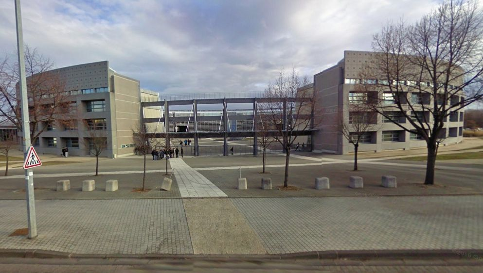
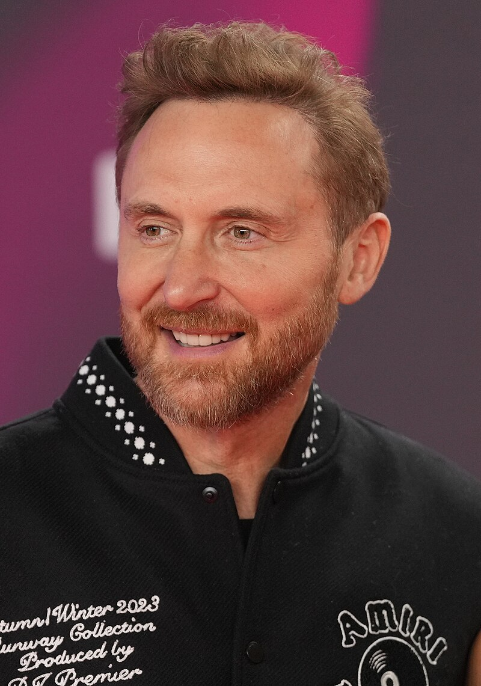
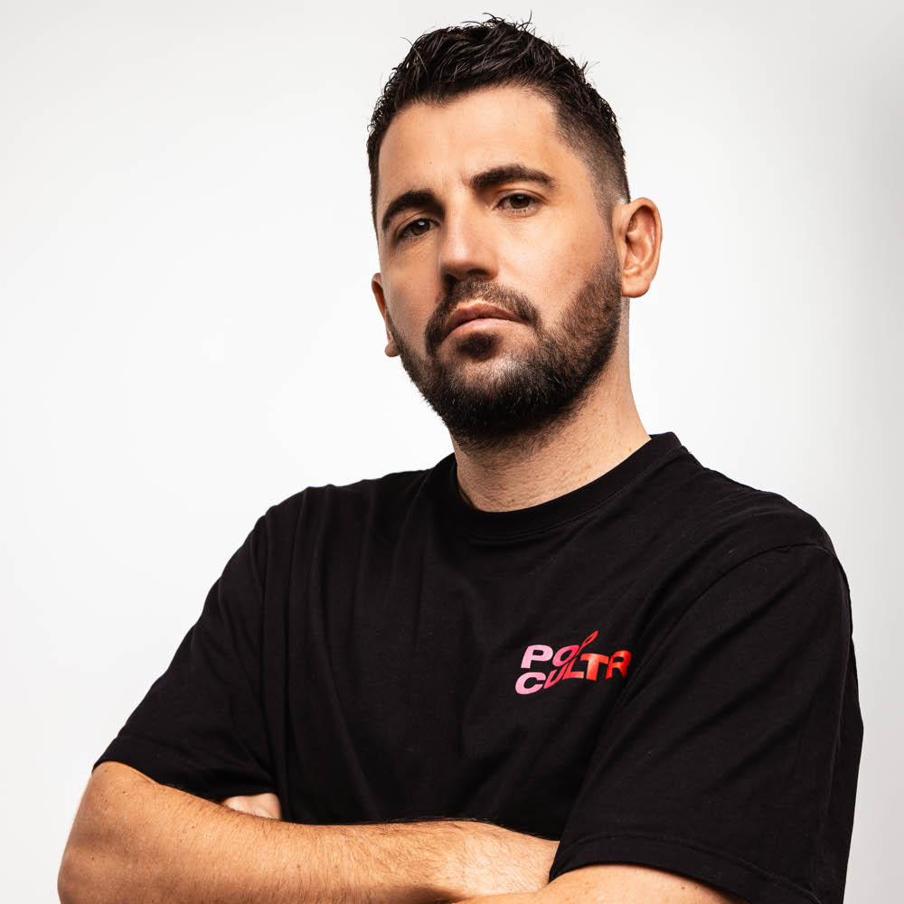
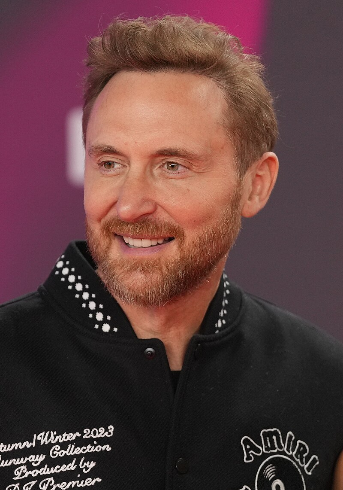
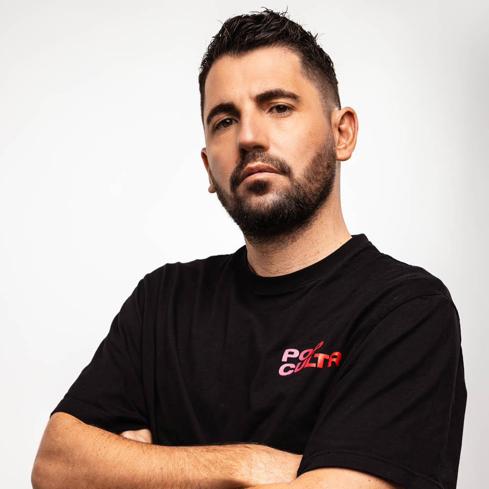

Joel PERRONE
Etudiant en première année de BUT - Réseaux et Télécommunications

Etudiant en première année de BUT - Réseaux et Télécommunications
Je suis PERRONE Joël, j'ai 18 ans et je suis actuellement étudiant en 1re année de BUT - Réseaux et Télécommunications.
J'ai choisi cette formation pour la possibilité de faire de l'alternance en entreprise dès la deuxième année.
Je suis curieux, discipliné, persévérant et j'ai l'esprit d'équipe.
Je recherche une alternance dans une entreprise de services numériques (ESN) dès septembre 2024 sur un rythme d'un mois en cours et un mois en entreprise pour une durée de deux ans.
Mon objectif est d'augmenter la maîtrise de mes compétences et de gagner en expérience professionnelle.
| Image | Nom de la formation/diplôme | Etablissement | Année | Description |
|---|---|---|---|---|
| BUT - Réseaux et Télécommunications | IUT - Clermont-Ferrand | 2024 | En février 2024, j'ai validé mon premier semestre en première année de BUT - Réseaux et Télécommunications. J'ai pu atteindre cette étape grâce à mon travail et mon investissement en cours. Je compte poursuivre de cette manière lors du deuxième semestre et de même pour les années suivantes. | |
| BUT - Réseaux et Télécommunications | IUT - Clermont-Ferrand | 2023 | En septembre 2023, je me suis inscrit en BUT - Réseaux et Télécommunications, en parcours cybersécurité. C'est une formation en trois ans pour nous former à devenir expert en solutions technologiques pouvant se poursuivre sur un master ou une école d'ingénieurs. | |
|  | Baccalauréat STI2D mention bien | Lycée Polyvalent Lafayette | 2023 | En juin 2023, j'ai obtenu mon baccalauréat technologique avec mention bien au lycée Lafayette à Clermont-Ferrand (63). |
 |
PSC1 | Collège Saint-Exupéry de Lempdes | 2017 | En avril 2017, j'ai obtenu un Certificat Prévention et secours civiques de niveau 1, aussi appelé PSC1, que j'ai obtenu au collège Saint-Exupéry (63). |
Le 16 mai 2024, j'ai participé au programme "les cordées de la réussite", une entraide entre établissements scolaires. J'ai été désigné comme membre du jury pour une préparation d'un oral de "Chef-d'œuvre" de trois étudiants en terminale du Lycée Professionnel Gergovie. Cette expérience m'a permis d'augmenter ma compétence "Communication".
En juillet 2020, j'ai participé à "l'atelier coup de pouce" proposé par la commune de Lempdes. On m'a confié les tâches d'entretien de la ville, c'est-à-dire tailler les buissons du parc de la mairie, repeindre les murs d'un établissement dans le complexe sportif.
En avril 2020, j'ai effectué un stage d'observation dans l'entreprise "Comm360", une agence de communication se trouvant à Issoire (63). J'ai pu découvrir le métier de graphiste, webmestre et agent comptable.
En mars 2020, j'ai effectué un autre stage à "La 2Deuche", une salle de spectacle se trouvant à Lempdes (63). J'ai pu découvrir le métier d'ingénieur son et ingénieur lumière.
Persévérance
Je ne reste pas sur un échec.
Je cherche à comprendre
mon erreur.
Discipliné
Je préfère que mon travail
soit fait avant de
me divertir.
Curieux
J'aime apprendre
le plus de choses possibles.
Esprit d'équipe
Je privilégie l'évolution
de l'entreprise plutôt que
mes intérêts personnels.


Depuis plus d'un an, je fais de la musculation en salle. J'y investit beaucoup de temps car je souhaite être en bonne santé.


 


